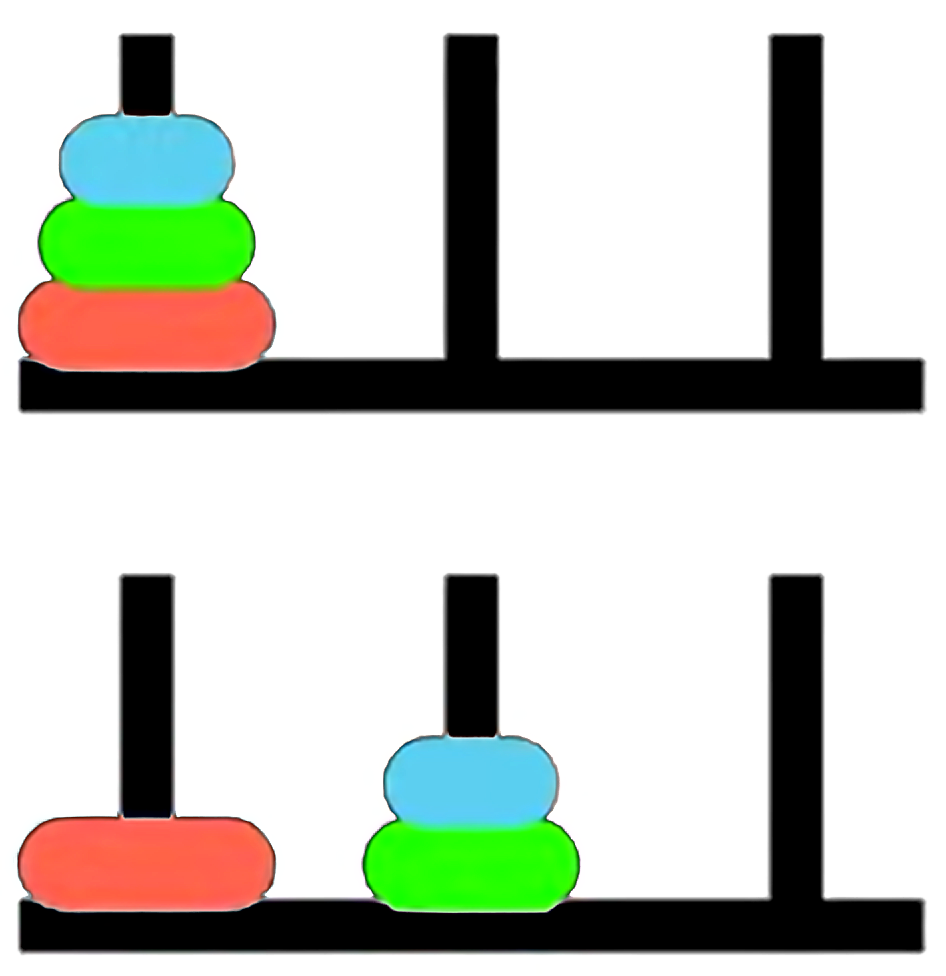

Synthetic Relativity: Tri-modality and the Fixpoint Semantics of the Logical Observer
Slides
This module is also available in the following versions
The situation calculus
The situation calculus (Towers of Hanoi)

Fluents: \(\mathit{OnPeg}(d, p, s)\)
Initial Situation:
\[ \begin{align*} & \mathit{OnPeg}(D_1, Peg_1, S_0) \land \\ & \mathit{OnPeg}(D_2, Peg_1, S_0) \land \\ & \mathit{OnPeg}(D_3, Peg_1, S_0) \end{align*} \]
Actions: \(move(d, p_{from}, p_{to})\)
Goal: All disks on \(Peg_3\).
Why Towers of Hanoi?
- Naturally highly recursive, problem naturally decomposes into subproblems
- You learn how to solve it during search, for larger instances of \(n\)
Reiter’s Induction Axiom
Situations & Actions

\[ \begin{align*} \mathit{Initial\;situation:}\;& S_0 \\ & do(move(D_1, Peg_1, Peg_3), S_0) \\ do(move(D_2, \mathit{Peg}_1, \mathit{Peg}_2),\;& do(move(D_1, Peg_1, Peg_3), S_0)) \\ do(move(D_1, \mathit{Peg}_3, \mathit{Peg}_2), do(move(D_2, \mathit{Peg}_1, \mathit{Peg}_2),\;& do(move(D_1, Peg_1, Peg_3), S_0)) \\ & \ldots \end{align*} \]
Situations as a Least Fixpoint
Recall that the Second-Order Induction Axiom dictates the exact boundaries of the universe:
- The Premise: \(P(S_0) \land \forall a,s\,(P(s)\to P(do(a,s)))\) translates to \(\Gamma(P) \subseteq P\). Here, \(P\) is a pre-fixed point (an over-approximation that obeys the rules, but may contain unreachable “junk” like ghost situations or disconnected time loops).
- The Consequent: \(\forall s\,P(s)\) asserts that the true universe of situations \(\mathcal{S}\) is a subset of \(P\).
- The axiom combines these, stating \(\mathcal{S}\) is a subset of every valid pre-fixed point. Taking their intersection mathematically acts as a sieve, filtering out all the unshared, unreachable junk.
Situations as a Least Fixpoint (continued)
Syntactic transformation to First Order Logic
Basic Action Theories [Lin and Reiter 94] define Theory
\[\mathcal{D} = \Sigma \cup \mathcal{D}_{S_0} \cup {\color{blue}{\mathcal{D}_{Poss}}} \cup {\color{blue}{\mathcal{D}_{SSA}}} \cup \mathcal{D}_{UNA}\]
- \(\color{blue}{\mathcal{D}_{poss}}\): axioms describing the prerequisites of the primitive actions, of the form:
\[ Poss(A(\vec{x}), s) \equiv \Theta_A(\vec{x}, s), \] one for each primitive action \(A\).
For example:
\[ \begin{align*} Poss(move(d, p_{from}, p_{to}), s) \equiv \;& Disk(d) \land (p_{from} \neq p_{to}) \land OnPeg(d, p_{from}, s) \land \\ & \neg \exists d' \Big( Disk(d') \land Smaller(d', d) \land \\ & \big( OnPeg(d', p_{from}, s) \lor OnPeg(d', p_{to}, s) \big) \Big) \end{align*} \]
A solution to the frame problem (sometimes) [Reiter 91]
- \(\color{blue}{\mathcal{D}_{ssa}}\): axioms describing the effects and non-effects of actions, of the form \(F(\vec{x}, do(a, s)) \equiv \psi_F(\vec{x}, a, s),\) one for each fluent \(F\).
- Positive effect axioms:
- Negative effect axioms:
- Frame axioms:
- Completeness assumption (explanation closure):
\[ \neg OnPeg(d, p, s) \land OnPeg(d, p, do(a, s)) \supset \exists p_{from} \ (a = move(d, p_{from}, p)) \]
\(\color{blue}{\mathcal{D}_{ssa}}\) \(=\) positive effect axioms \(+\) negative effect axioms \(+\) frame axioms \(+\) completeness assumption
Successor State Axioms
Suppose that for fluent \(F(\vec{x}, s)\):
\(\gamma_F^+(\vec{x}, a, s)\) encodes all positive effects; and
\(\gamma_F^-(\vec{x}, a, s)\) encodes all negative effects.
\[ \begin{align*} \gamma_{OnPeg}^+(d, p, a, s) \;&\stackrel{\text{def}}{=}\; \exists p_{from} \ (a = move(d, p_{from}, p)) \\ \gamma_{OnPeg}^-(d, p, a, s) \;&\stackrel{\text{def}}{=}\; \exists p_{to} \ (a = move(d, p, p_{to})) \end{align*} \]
So successor state axiom is:
\[ \begin{align*} OnPeg(d, p, do(a, s)) \equiv \;& [\exists p_{from} \ (a = move(d, p_{from}, p))] \lor \\ & OnPeg(d, p, s) \land \neg [\exists p_{to} \ (a = move(d, p, p_{to}))] \end{align*} \]
Regression
The regression operator (\(\mathcal{R}\)) evaluates a query about a future state by pushing it backward in time.
\[ \mathcal{R}[{\color{blue}{F(\vec{x}, do(a, s))}}] \;\stackrel{\text{def}}{=}\; \gamma_F^+(\vec{x}, a, s) \lor {\color{blue}{F(\vec{x}, s)}} \land \neg \gamma_F^-(\vec{x}, a, s) \]
For Example: is \(D_2\) on \(Peg_2\) after we move \(D_1\) from \(Peg_1\) to \(Peg_2\)?
3. Evaluate using Foundational Axioms (\(\mathcal{D}_{una}\)): Because our Unique Names Axioms explicitly state \(D_1 \neq D_2\), both action equivalences mathematically evaluate to \(False\):
\[ \equiv \mathrm{False} \lor \color{blue}{OnPeg(D_2, Peg_C, S_0)} \land \neg \mathrm{False} \]
\[ \equiv \color{blue}{OnPeg(D_2, Peg_C, S_0)} \]
Foundational Limitations of Least Fixpoints?
While classical induction successfully builds a valid history, enforcing this rigid geometry creates severe structural limits for dynamic, self-reflective systems:
- Strict Tree Topology (Unique Predecessors): Distinct action histories never converge. Even if two different paths result in the exact same state, the logic traps them in completely isolated parallel universes.
- Total Ordering & The Reflection Barrier: The strictly linear sequence of actions restricts true partial ordering and concurrency. The logic cannot step “outside” the sequence to self-reflect or re-evaluate its overarching reference frame.
- No Native State Equivalence: Because states are strictly defined by their rigid syntactic history rather than their observable behaviour, the topology cannot naturally “fold” or quotient identical states together.
- The Finiteness Barrier: By mathematical definition, a least fixpoint (\(\mu\)) only constructs strictly finite chains. It is fundamentally blind to continuous processes, non-terminating streams, and infinite global invariants.
Property Persistence as a Greatest Fixpoint
Property persistence in the situation calculus captures a condition \(\phi\) that holds now and is preserved after any legal action via regression (\(\mathcal{R}\)).
[Kelly & Pearce AIJ 2010] define this as the Persistence operator (\(\mathcal{P}\)):
\[ \mathcal{P}(Z) \equiv \phi(s) \land \forall a \big( \textit{Poss}(a, s) \to \mathcal{R}[\, Z(do(a, s)) \,] \big) \]
Iteratively applying this meta-level calculation computes the maximal invariant without explicitly invoking the second-order induction axiom.
- By wrapping the single-step regression operator inside a monotonic formula transformer (\(\mathcal{P}\)), the future can be evaluated back in the current state.
Category Theory
The Dual Problems: Algebras & Coalgebras
To transition from finite histories to observing infinite Greatest Fixpoints, we harness Category Theory. An endofunctor (\(F\)) over a state space (\(S\)) is a structural template that shapes the resulting data object, \(F(S)\).
- Algebra (Situation Calculus / Constructor): Morphism arrows point inward: \(\; F(S) \to S\)
- Our endofunctor shapes the inputs: \(F(S) = Action \times S\)
- The morphism evaluates to: \((Action \times State_{current}) \to State_{next}\)
- Concept: Construct a history from the bottom-up.
- Coalgebra (Property Persistence / Observer): Morphism arrows point outward: \(\; S \to F(S)\)
- Our endofunctor shapes the emitted data: \(F(S) = Observation \times S\)
- The morphism evaluates to: \(State_{current} \to (Observation \times State_{next})\)
- Concept: Take a running state, break off an observation, and unfold the remaining state into the future.
Categorical Proof Techniques: Coinduction & Stone Duality
To reason about infinite streams when operating in coalgebras, we require two categorical proof mechanisms .
1. Coinduction (The Dual of Induction) While standard induction proves a finite base case and builds upward, coinduction works top-down. It proposes a Greatest Fixpoint (an infinite rule, \(\nu Z\)) and verifies it locally. If the observation holds right now, and the rules guarantee it holds in the next step, the Greatest Fixpoint is guaranteed to hold forever.
2. Stone Duality (Syntax-Semantics Mirror) In Category Theory, Stone Duality dictates a perfect, inverse mirror-image between Syntax (logical formulas) and Semantics (topological state space).
- The Syntactic Transformation: If our logic formally declares two distinct observational paths to be identical (Bisimulation Equivalence)…
- The Semantic Result: Stone Duality guarantees the underlying semantic space automatically folds (quotients) to make those paths topologically identical.
Example: Coinduction in Towers of Hanoi
\[ \Delta p \equiv (p_{to} - p_{from}) \pmod 3 \]
1. The Coalgebraic Stream: Solving the puzzle generates an infinite stream of spatial jumps:\[ \langle +2 \rangle, \langle -1 \rangle, \langle -1 \rangle, \langle +2 \rangle \dots \]
2. The Coinductive Proposal: We propose an idealised Greatest Fixpoint where the disk always cycles left:\[ ParityInvariant \equiv \nu Z.\ \langle -1 \rangle Z \]
Example: Coinduction in Towers of Hanoi (Continued)
\[ \forall \phi.\ \langle +2 \rangle \phi \;\equiv\; \langle -1 \rangle \phi \]
4. The Stone Duality Resolution: By syntactically equating these propositions, Stone Duality automatically forces the absolute state space to fold into a modulo-3 quotient ring (\(\mathbb{Z}_3\))!
This is our new syntactic transformation!
Synthetic relativity axioms
Tri-modality & ternary representation
Logical entailment operates within a Total Category—a mathematically complete Stone Duality glues syntax and semantics together.
It is evaluated relative to a specific baseline Reference Frame, \(\mathrm{S_f}\). This facilitates the rules and symmetries over which the observer’s duality is constructed.
- It utilises a ternary structure, drawing from Routley-Meyer semantics for substructural, relevance, and intuitionistic logics, involving relations \(R(x, y, \mathrm{S_f})\).
- This allows us to decouple the synthetic (axiomatic) transformations from the topological space.
Synthetic Relativity Axioms
The space is governed by three interacting modalities.
\(\mathrm{RDo}\) (The Subproblem / Syntax): The Inductive Accumulator (\(\Box_1\)) Operates in constructive, non-Boolean logic. Recursively gathers finite, computationally observable properties (compact elements) along a directed logical path.
\(\mathrm{ODo}\) (The Master Problem / Semantics): The Limit/Creator Modality (\(\Box_2\)) The semantic evaluator and interval invariant. Performs topological closure—evaluating the directed set generated by \(\mathrm{RDo}\) and snapping it into a discrete, continuous limit.
\(\mathrm{PDo}\) (Autonomous Progression): The Dynamic Transition Functor (\(\Box_3\)) The transition modality that governs the forward evolution of the system. Mathematically, it acts as an endofunctor within the Total Category, orchestrating the step-by-step recursive interaction (categorical adjunction) of local syntax (\(\mathrm{RDo}\)) and global semantics (\(\mathrm{ODo}\)) relative to \(S_f\).
Constructive Accumulation
Constructive Accumulation (continued)
Unrolling this recursive law mathematically generates an endlessly nested trace of accumulating evidence:
\[ \mathrm{PDo}(S_r, S_o, S_f) \]\[ \mathrm{PDo}\Big(\, \mathrm{RDo}\big(R_2, \mathrm{RDo}(R_1,S_r)\big),\; \mathrm{ODo}\big(O_2, \mathrm{ODo}(O_1,S_o)\big),\; S_f \,\Big) \dots \mathit{etc.} \]
It reads: “Relative to reference frame \(S_f\), the accumulation of inductive evidence \(\mathrm{RDo}\) yields the coinductively realised semantic limit \(\mathrm{ODo}\).”
Semantic Realisation
Semantic Realisation (continued)
- The ultimate stable fixpoint (\(\mu\)) is caught when \(\mathrm{ODo}\) evaluates the limit (Supremum, \(\bigsqcup\)) of the recursively enumerable inductive proofs (\(\mathrm{RDo}\)).
- This accumulation mathematically begins from an initial state of ignorance (\(\bot\)), but is constructed and evaluated strictly relative to the rules of the reference frame (\(S_f\)).
- This mathematically realised limit acts as the interval semantic invariant for that specific frame.
The Synthetic Transformation
Towers of Hanoi example
1. Local Unrolling (Building the Situation Trace): The logic recursively accumulates primitive actions (moving disks), generating the topological equivalent of a nested \(do()\) sequence:
\[ \mathrm{PDo}\Big(\, \mathrm{RDo}\big({\color{blue}{\text{move}(D_1, P_2)}}, \dots S_f\big),\; \mathrm{ODo}\big(O_{\text{target}}, \text{Goal}\big),\; S_f \,\Big) \]
2. Limit Catching: Through top-down semantic reflection (\(\Box_2\)), the \(\mathrm{ODo}\) modality mathematically coinduces a structural property of the optimal traces: The Parity Invariant (\(O_{\text{parity}}\)).
3. The Synthetic Transformation (Change of Base): The Transformation Axiom fires, executing a categorical Change of Base:
\[ \mathrm{PDo}(N_{\text{trace}}, {\color{blue}{O_{\text{parity}}}}, S_f) \longrightarrow \mathrm{PDo}(X, Y, {\color{blue}{\mathrm{O_{\text{parity}}}}}) \]
The invariant (cycle \(D_1\), alternate move, cycle \(D_1\)) emerges as the unique, strictly positive proof path through the state space.
- The new parity invariant shifts to become the Reference Frame. By adopting this rule as a lifted axiom, the search tree branching factor strictly collapses from 3 down to 1.
The Dual Fixpoints
Unifying Reachability (\(\mu\)) & Persistence (\(\nu\)): By intertwining syntax (\(\mathrm{RDo}\)) and semantics (\(\mathrm{ODo}\)), the dynamic transition functor (\(\mathrm{PDo}\)) mathematically fuses two distinct forms of logical progression:
- Induction / Least Fixpoint (\(\mu\)): Governed by the \(\mathrm{RDo}\) modality. The bottom-up synthesis of finite evidence from baseline ignorance (\(\bot\)). It guarantees computational Reachability.
- Coinduction / Greatest Fixpoint (\(\nu\)): Governed by the \(\mathrm{ODo}\) modality. The top-down evaluation of continuous semantics. It guarantees Safety and Property Persistence.
Relativistic Domain Theory in Logical Form (R-DTLF)
DTLF Logical Primitives—No negation or implication
We require a logic that fuses classical (inductive) logic with intuitionistic (coinductive) logic, so we ground our system in Abramsky’s DTLF (1991) based on an intuitionistic construction of truth. DTLF formulas represent observable properties as they unfold, because a system can only assert what it can finitely verify, the baseline syntax is strictly positive:
\[ \phi, \psi ::= \mathbf{t} \mid \mathbf{f} \mid \phi \land \psi \mid \phi \lor \psi \mid \text{Constructors}(\phi) \]
- \(X, Y\) (Variables): Placeholders used to define recursive logical properties.
- \(\top\) (True / Top): The baseline trivial observation (meaning a valid transition occurred). \(\bot\) (False / Falsum): The null observation, represents paradox, an impossible transition, or the state of “absolute baseline ignorance” from which new inductive proofs begin.
- \(\phi \land \psi \ / \ \phi \lor \psi\) (Conjunction / Disjunction): “I simultaneously observe both \(\phi\) and \(\psi\)” / “I observe either \(\phi\) or \(\psi\).”
- \(\langle \delta \rangle \phi\) (The Coalgebraic Transition Modality): This is the literal “arrow breaking in two.” It reads: “The system makes a visible relativistic jump of \(\delta\) (where \(\delta \in \mathbb{Z}\)), and the continuing, unobserved future stream will satisfy property \(\phi\).”
- \(\mu X.\ \Phi(X)\) / \(\nu X.\ \Phi(X)\) (Least & Greatest Fixpoints): The primitives for recursive behaviour. \(\mu\) drives finite, bottom-up induction from baseline ignorance (reachability), while \(\nu\) defines an endlessly repeating, top-down coinductive stream (persistence).
Example: Computing the Hanoi Parity Invariant
We can now express our hypothesis for the Towers of Hanoi in DTLF. We want to co-induce an idealised invariant where the smallest disk flawlessly cycles one peg to the right (\(+1\)) forever.
1. Proposing the Idealised Rule: We propose this property as our Greatest Fixpoint:\[ \nu X.\ (\langle -1 \rangle X \lor \langle +2 \rangle X) \;\equiv\; \nu X.\ \langle -1 \rangle X \]
Conclusion
Conclusion
| Feature | Standard Situation Calculus (Induction) | Synthetic Relativity (R-DTLF) (Coinduction) |
|---|---|---|
| Objective | Historical Reachability / Action Execution | Property Persistence / Self-transcending reasoning |
| Conceptual Math | Least Fixpoint (LFP) | Greatest Fixpoint (GFP) & Least Fixpoint LFP |
| Logical Foundation | Second-Order Induction (Algebraic) | Co-induction (Coalgebraic) + Induction (Algebraic) |
| Syntactic Transformation | Transformation into First-Order Logic (SSAs) | Transformation to coinduced properties then compiled to SSAs |
| Computation | Computed as LFP in the \(Do\) modality (Golog) | Computed in the DTLF + Do modality (Golog) |
| Resolution | First-Order Theorem Proving | Bisimulation Equivalence (Quotients) + First-Order Theorem Proving |
Appendix
Spatial Completeness & The Static Limitation
The mathematical power of vanilla DTLF lies in Spatial Completeness (rooted in Stone Duality).
- The Guarantee: It proves a 1-to-1 isomorphism between the algebraic, step-by-step Syntax (\(\phi \vdash \psi\)) and the continuous, geometric Semantics (\([\![\phi]\!] \subseteq [\![\psi]\!]\)).
- Catching Limits: Computations resolve when the directed path of finite evidence mathematically catches (satisfies) an infinite continuous topological limit (a Supremum).
Vanilla DTLF perfectly describes a single, static universe. However, to differentiate induction from coinduction and model dynamic, continuous learning, the Reference Frame itself must dynamically shift so we use a relativistic version, termed R-DTLF.
Bridging Worlds: Compilation into SSAs
R-DTLF does not discard classical logic; it functionally generates it at the semantic limits.
Bridging Worlds: Compilation into SSAs (continued)
- Compiling Successor State Axioms (SSAs): This geometric compression is mathematically homologous to Ray Reiter’s Explanation Closure. The Relativistic approach acts as an endogenous logic compiler—synthesising complex discovered invariants directly into rigid First-Order logical rules.
- Hybrid Execution: Because of this formal theorem, we can securely export newly learned R-DTLF heuristics directly into standard classical Basic Action Theories (BATs). This allows R-DTLF to handle complex structural learning, and legacy solvers (like Golog).
Theory-Driven Generalization
When the converged limit shifts to become the new Reference Frame (\(S_f\)) via the Transformation Axiom, it acts natively as a global Greatest Fixpoint (\(\nu\)) and the coinduced property is added to the reference theory for subsequent computations. The system treats generalisation as a categorical operation over its Reference Theory (\(S_F\)) facilitating invariant proposal through the foundational duality of fibrations and adjunctions.
- 1. Change of Base (The Fibrational Shift)
- Logical properties form a Total Category fibered over a Base Category of states.
- The system performs a Change of Base from the coinduced space (\(ODo\)) to the inductive space (\(RDo\)). This functor maps complex, induced histories into coinduced progressions.
- 2. Adjoint Duality (Swapping the Problem)
- Generalising a safe invariant is structurally identical to the problem of deductive planning, simply with the functors reversed (an Adjunction: \(Left \dashv Right\)).
- Planning (Left Adjoint): Inductive, bottom-up synthesis of a finite trace (Least Fixpoint).
- Generalising (Right Adjoint): Coinductive, top-down projection of an infinite bound (Greatest Fixpoint). The finite local observations mathematically push across the adjunction to form the exact coinductive proposal.
Theory-Driven Generalization (continued)
- 3. Universal Properties (Terminal Coalgebras)
- The system requires no external engineering templates or “Syntax-Guided” rules.
- Because \(S_F\) natively defines the geometric symmetries of the domain, the coinductive proposal emerges as a Universal Property (specifically, a Terminal Coalgebra). Stone Duality ensures that the logical syntax automatically folds to perfectly bound the state space’s innate topology.
Synthetic Relativity versus Situation Calculus versus GLB
| Aspect | Synthetic Relativity (R-DTLF) | Situation Calculus (BATs/SSAs) \(+\) variants of \(\mu\)-calculus | Bimodal Provability logic (GLB) |
|---|---|---|---|
| Modalities | \(\mathrm{RDo}\), \(\mathrm{ODo}\) & \(\mathrm{PDo}\) | \(\mathrm{PDo}\), \(\langle a \rangle \phi\) (possibility), \([a] \phi\) (necessity) | \(\Box\), \(\Box_\omega\) |
| Ordering | Sequences of finite Posets, non-unique predecessors, non-well ordered | Successor function, Unique predecessors, non-well ordered | Transfinite ordinality: limits, Non-unique predecessors, well-ordered |
| Completeness? | Spatially complete (continuous geometry) and Turing complete (universal computation via recursive domains); Arithmetically incomplete (triggers Gödel’s incompleteness). | Turing complete (can compute anything), but neither spatially complete (no continuous geometry) nor arithmetically complete (subject to Gödel’s incompleteness). | Arithmetically complete (flawlessly models the bounds of provability), but neither Turing complete (strictly decidable, cannot compute loops) nor spatially complete. |
| Other | Algebraic compactness. Kleene’s Realizability & BHK (Brouwer-Heyting-Kolmogorov) Interpretation. | Regression Theorem (solves the frame problem). Fixpoint Semantics & Knaster-Tarski Theorem. | Japaridze’s Arithmetical Completeness Theorem. Löb’s Theorem & Well-founded Kripke Semantics. |